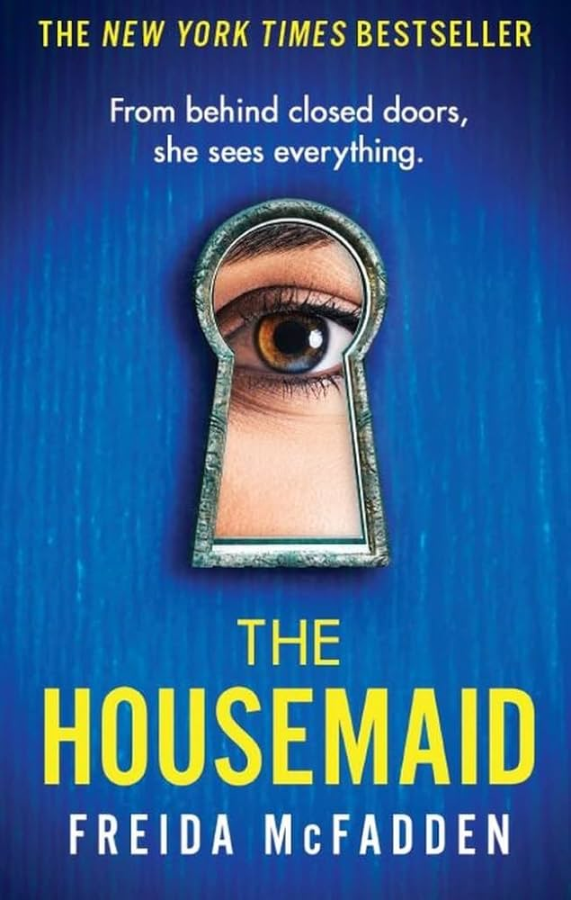

The Housemaid
Every day I clean the Winchesters’ beautiful house from top to bottom. I pick up their daughter from school. I cook a delicious meal for the whole family before heading up to eat alone in my tiny room on the top floor. I try to ignore how Nina Winchester makes a mess just to watch me clean it. How she tells strange lies about her own daughter. And how her husband Andrew seems more broken every day. But as I look into Andrew’s deep brown eyes, it’s hard not to imagine what it would be like to live Nina’s life. The walk-in closet. The fancy car. The perfect husband. I only try on one of Nina’s pristine white dresses once. Just to see what it’s like. But she soon finds out… and by the time she realizes what I’m capable of, it’s far too late. A gripping psychological thriller full of twists, secrets, and shocking revelations, *The Housemaid* will keep you turning pages late into the night.
179 kr